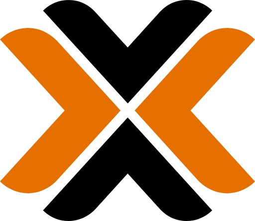
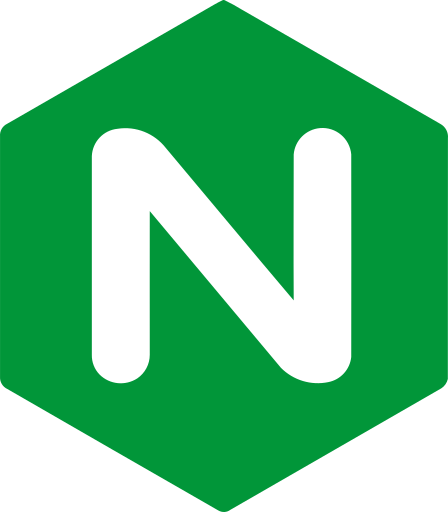
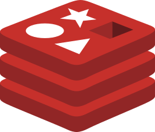
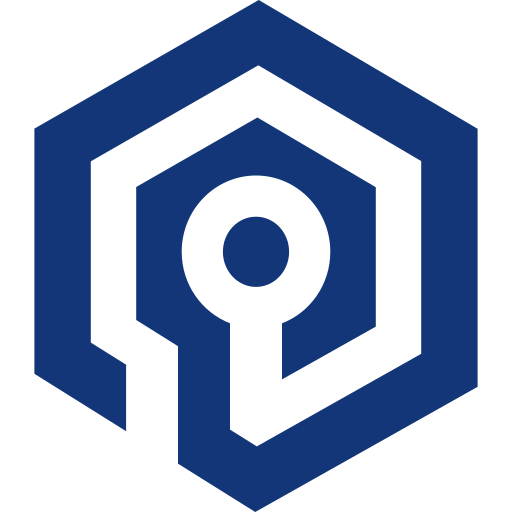
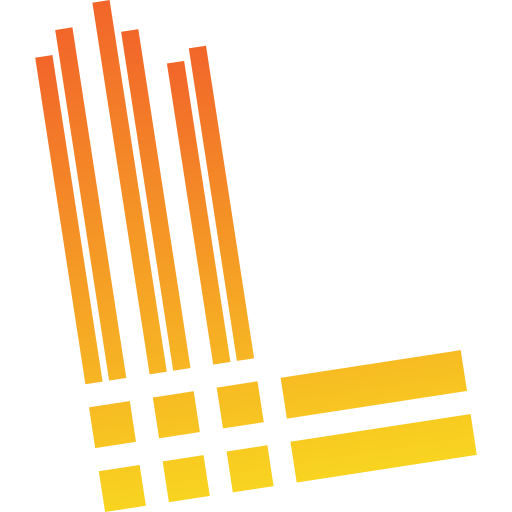
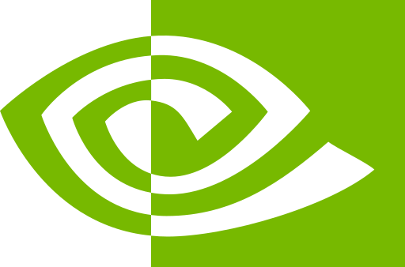

Разные устройства, часть узлов включается по необходимости, GPU passthrough, локальные данные и отсутствие белого IP — всё это нужно было превратить в управляемую систему.
CASE 01ПЕРСОНАЛЬНАЯ ИНФРАСТРУКТУРА
MYLAB.
Моя инфраструктура. От кабеля до кластера.
От двух GPU и Proxmox до собственной проводной сети, Kubernetes, Grafana и проверяемого архива.
Открыть карту кейсаMYLAB / SYSTEM ATLASКАРТА СЛОЁВ
02 / VIRTUALIZATIONProxmox VEQEMU · GPU passthrough
03 / NETWORKLAN + Wi-FiSwitch · VPN · VPS
01 / COMPUTECPU + GPUФизическая основа
04 / PLATFORMKubernetesGitOps · AI · Services
06 / RECOVERYДанныеBackup · Verify · Restore
05 / OBSERVABILITYGrafanaMetrics · Logs · Alerts
Выберите слой — откроется его история. Это карта кейса, не live-мониторинг.
- 04
- инфраструктурных узла
- 03
- GPU
- 53
- аппаратных потока
- 36.6
- GiB VRAM
ПРОВЕРЕННЫЙ ИСТОРИЧЕСКИЙ СРЕЗ · 2026
00 / THE BRIEF
Собрать из разного железа одну понятную платформу.
У каждого узла своя роль; пользовательский трафик отделён от администрирования; каждое важное изменение оставляет проверяемое доказательство.
Домашний контур для разработки, AI, хранения и эксплуатации, который можно наблюдать, разбирать по слоям и переносить без слепой веры в бэкапы.
REAL HARDWARE / VERIFIED SPECS
Характеристики взяты из инвентаризации; статус показан на момент аудита, а не как live SLA.
COMPUTE CORE
32 GB
VRAM
- CPU
- AMD Ryzen 9 9950X
- BOARD
- MSI MAG B650 Tomahawk WiFi
- GPU
- 2 x Palit RTX 5060 Ti 16 GB
- POWER
- 1000 W
- COOLING
- 360 mm AIO
Роль: Proxmox, QEMU VM, GPU passthrough, control plane и тяжёлые вычислительные среды.
Proxmox host
Ryzen 9 9950X · 64 GB · 2 x RTX 5060 Ti
Проводная LAN · виртуализация и GPULenovo LOQ
Ryzen 7 7435HS · 24 GB · RTX 4050 · Ubuntu Server
LAN / Wi‑Fi · Kubernetes workerDebian laptop
Intel i3 · ~4 GB · 1 TB HDD · Debian 13
Проводная LAN · архив и лёгкие сервисыExternal VPS
1 vCPU · ~1 GB · 20 GB
Интернет · WireGuard / SSH / gatewayManagement station
Core Ultra 7 · 16 GB · 1 TB · dual boot
Администрирование · SSH / VPN · не серверный узелREAD-ONLY AUDIT / HISTORICAL
PROXMOX VE01физический PVE-узел
05QEMU VM
00LXC
1.84TB THIN STORAGE
PHYSICAL32 threads / 60.4 GiB RAM
ALLOCATED46 vCPU / 94 GiB RAM
Осознанный overcommit и thin provisioning дали гибкость, но потребовали наблюдать memory pressure и не считать выделенный объём физически свободным.
Raw UI не публикуется: в нём были внутренние имена и адреса. Здесь — проверенная обезличенная выжимка аудита.BUILD LOG
От bare metal до управляемой платформы.
- 01HARDWARE
Собрал основу
Проверил питание, охлаждение, NVMe, память и обе GPU до установки сервисов.
- 02PROXMOX
Установил гипервизор
Развернул Proxmox VE и разделил роли по QEMU-виртуальным машинам.
- 03PCIe / NVIDIA
Настроил GPU passthrough
Передавал две физические RTX в выбранные вычислительные VM и проверял их по UUID.
- 04LINUX
Подключил Linux-узлы
Подготовил Ubuntu Server и Debian, containerd, Docker и автозапуск системных служб.
- 05K8S
Собрал Kubernetes
Настроил kubeadm, Calico, MetalLB, kube-proxy и NVIDIA Container Toolkit.
- 06DATA
Перенёс stateful-нагрузки
Закрепил постоянные данные за стабильным control-plane узлом, сохранив исходные копии.
INCIDENT / GPU PASSTHROUGH
Guest reboot оказался не физическим reset.
Обе карты были видны на PCI, но драйвер поднимал только одну; function reset и ROM-Bar не помогли.Стабильные параметры passthrough + полный cold power cycle физического хоста вернули обе GPU; результат проверен через nvidia-smi, device nodes и DCGM.
INTERNETHUAWEI HG8245Q2
ROUTER + ONLY DHCP8-PORT
SWITCH
ROUTER + ONLY DHCP8-PORT
SWITCH
PROXMOXGPU NODEDEBIAN
MERCUSYS AC12
AP + SWITCH / LAN‑TO‑LANTP‑LINK
WIRED SWITCH
AP + SWITCH / LAN‑TO‑LANTP‑LINK
WIRED SWITCH
Huawei HG8245Q2
Главный роутер и единственный DHCP: одна точка выдачи адресов вместо конкурирующих настроек.
Mercusys AC12
DHCP и NAT отключены, WAN не используется; подключён LAN‑to‑LAN как точка доступа и коммутатор.
TP‑Link TD‑W8951ND
После сброса Wi‑Fi и DHCP отключены, DSL/WAN не используются; устройство повторно работает как проводной switch.
2.4 + 5 GHz
Общий SSID, WPA2‑AES, WPS выключен, а каналы точек разнесены. Секреты и адреса на странице намеренно не показаны.
Подтверждены один DHCP‑домен, отсутствие double NAT, четыре BSSID под одним SSID и доступность серверного контура.
Это не mesh и не WPA3; старый сегмент ограничен примерно 100 Мбит/с, а гостевая VLAN и captive portal пока не реализованы.
Ethernet принтера не удалось стабилизировать после проверки кабеля и портов, поэтому рабочим резервным вариантом оставлен USB.
HAND-TERMINATED LINKS
- 01Замерить трассу и длину
- 02Отрезать и зачистить CAT6A
- 03Уложить пары и обжать RJ45
- 04Протестировать линии и подписать порты
SECURE ACCESS
Для каждого типа доступа — свой маршрут.
Веб-публикация, администрирование и чувствительный к задержке трафик не должны идти одной дорогой.USERCLOUDFLARE TUNNELINGRESSSERVICE
Только выбранные сервисы; outbound‑only tunnel, без открытой административной панели.
WORKSTATIONWIREGUARDVPSHOME LAB
Отдельный защищённый контур для SSH и администрирования.
CLIENTRADMINWINDOWS GATEWAYSERVICE
Связка VPS + WireGuard работала, но добавляла задержку; отдельный Windows‑шлюз стал основным, VPS — резервным.
Control plane
Оркестрация и стабильные stateful-нагрузки; Prometheus закреплён здесь, чтобы мониторинг не зависел от выключаемой AI‑VM.
AI / GPU
Физические GPU переключались между вычислительными VM; DCGM и аппаратные UUID позволяли объединять метрики без двойного подсчёта.
Linux nodes
Ubuntu Server и Debian входили в kubeadm‑кластер; выключенный worker становился NotReady, не ломая control plane.
GitOps path
GitLab / registry / review / Argo CD / Kubernetes. Sync отделён от пользовательского трафика и требует проверки stateful‑параметров.
TOOLCHAIN
У каждого инструмента — конкретная роль.
Это карта подтверждённого стека, а не список технологий «для красоты».
Proxmox VEhypervisorQEMUvirtual machines
Ubuntuserver nodes
Debianarchive / services
containerdK8s runtime
Kubernetesorchestration
Calicocluster network

NGINX IngressroutingGitLabgit / registry / runner
Argo CDGitOps
PostgreSQLdatabases


Redis / Valkeycache / queueetcdcluster state
Sealed Secretsprotected config
Prometheusmetrics
Grafanadashboards

LokilogsAlloytelemetry

NVIDIA DCGMGPU metricsCloudflare Tunnelweb access
Названия и товарные знаки принадлежат их владельцам.
EXPORTERSPROMETHEUSGRAFANADECISION
Targets — это экспортёры и источники, а не физические узлы. Выключенный источник честно становится DOWN, а не исчезает с dashboard.
5 sources
/ 3 GPU
Две RTX могли появляться из разных VM. Запросы группируют метрики по аппаратному UUID, поэтому GPU и VRAM не считаются дважды.
- exporter down
- high CPU / RAM
- low disk
- recent reboot
- GPU temp / VRAM
- K8s readiness
Одинаковая роль не означает одинаковый bootstrap.
- Симптом
Grafana вернула 502, новый pod не мог создать sandbox на Debian worker.
- Диагностика
Kubelet ожидал путь systemd-resolved, которого на Debian не было.
- Решение
Резервная копия конфигурации, корректный resolv.conf, перезапуск kubelet и контрольная проверка вернули мониторинг.
1 888файлов проверено по SHA‑256
15daily backup sets
52.9 GBcurated archive
- 01MAP
Инвентаризация
Сверить реальные df/du, сервисы, тома, базы и зависимости — не полагаться только на квоты.
- 02FREEZE
Остановка сервисов записи
Корректно остановить приложения, GitLab, registry, monitoring и игровые данные в понятном порядке.
- 03EXPORT
Нативные экспорты
Снять PostgreSQL dumps, etcd snapshot, GitLab backup и offline‑копию Grafana SQLite.
- 04COPY
Curated copy
Собрать registry, media, конфигурации и данные приложений без перезаписи исходных backup sets.
- 05VERIFY
Целостность
Сформировать manifest и SHA‑256; проверить gzip, каталоги pg_restore, SQLite и распаковку.
- 06PROVE
Restore drills
Восстановить выбранные PostgreSQL базы, проверить Git‑bundle и refs, мир, media и состояние control plane.
таблиц в двух тестовых восстановлениях
SQLite
chunks · 0 corrupt records
keys в финальном snapshot
repo bundles / refs проверено
объекта · missing = 0
MYLAB / THE RESULT
Собрать. Разобраться. Восстановить.
MyLab — моя практика полного цикла: от обжимки кабеля и установки гипервизора до диагностики сбоев и проверки данных. Не только запускать, но и понимать, как всё работает.